| 基礎からのベイズ統計学 |
| 基礎からのベイズ統計学 |
要因への曝露を統制した上で、正反応の比率（リスク）を比較する。
正反応が見られたサンプルと見られなかったサンプルとで、要因への曝露の有無を比較する。
比率の差
比率の差は同じでも、比率によってその比は異なる。要因への曝露が、非曝露に対してリスクを何倍高めるか。
前向き研究でも後ろ向き研究でも算出可能。リスクが極めて小さい場合は、リスク比とオッズ比は近い値をとる。
分割表の分析の場合、例えば曝露群と非曝露群における正反応の数をそれぞれ二項分布によってモデル化し、各群のリスクからリスク差、リスク比、オッズ比を生成量として算出すれば良い。
「自己・上司評価相関問題」で、転職群の相関が生え抜き群の相関よりも大きいか検証する。 すると、stanを用いて以下のような結果が得られる。
mean se_mean sd 2.5% 25% 50% 75% 97.5% n_eff Rhat
rho_a 0.627 0.000 0.043 0.536 0.599 0.629 0.657 0.706 10000 1
rho_b 0.724 0.000 0.034 0.653 0.702 0.726 0.748 0.785 8848 1
diff_rho 0.097 0.001 0.055 -0.009 0.060 0.096 0.134 0.206 10000 1
p_over0 0.961 0.002 0.193 0.000 1.000 1.000 1.000 1.000 7969 1
このとき、
相関係数の差diff_rhoの95%確信区間はと下限がゼロを含んでいるため、B群の相関とA群の相関に差があるとは言いにくい。
一方、仮説diff_rhoが正しい確率p_over0は96.1%で、B群の相関はA群の相関より強いとかなりの確率で言える1。
ある基準値を超えると、もう一方の変数が必ず欠測するデータ
ここで、
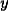: 欠測を含む大阪東京双方のデータ
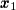: 大阪のみで販売された商品の（大阪での）データ
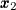: 東京でも販売された商品の大阪でのデータ
とすると、観測データ全体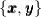の尤度は
| 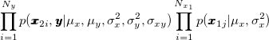 | (8.14) |
と表せる（ただし、欠測はにのみ依存するMAR）。 この尤度を最大化する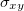は一致推定量となる2 3。
測定したい特性の分散が全分散に占める割合
 人を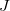人が評定するとして、
人を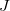人が評定するとして、
人それぞれ異なる人が評価する場合
評価者がランダムサンプルと考えられる場合（変量効果モデル）
評価者が最初から固定されている場合（混合効果モデル）
受験者 を採点者
を採点者 が採点する。
が採点する。
| 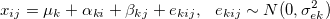 | (8.15) |
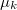: 全平均
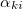: 受験者の効果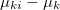, 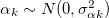
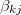: 評価者の効果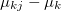, 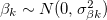（変量効果モデルの場合）
このとき、分散構造は
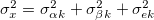
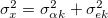
となる。
このとき、評定者が 人のときの評定平均に関する級内相関は、それぞれ
人のときの評定平均に関する級内相関は、それぞれ
| 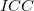 | 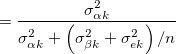 | (8.16) | ||
| 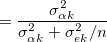 | (8.17) |
と定義される。 後者は 係数に一致。
係数に一致。
Footnotes
| 基礎からのベイズ統計学 |